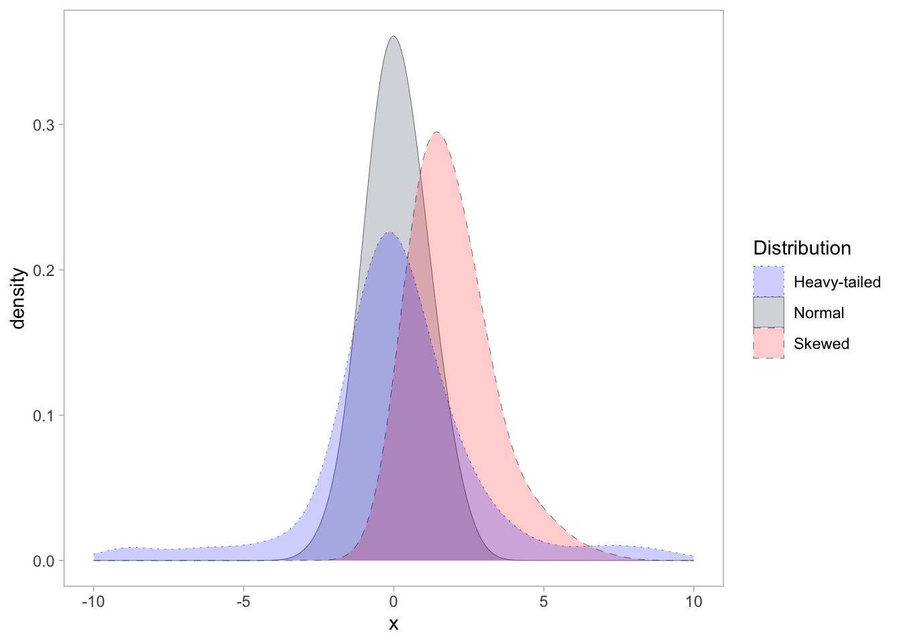
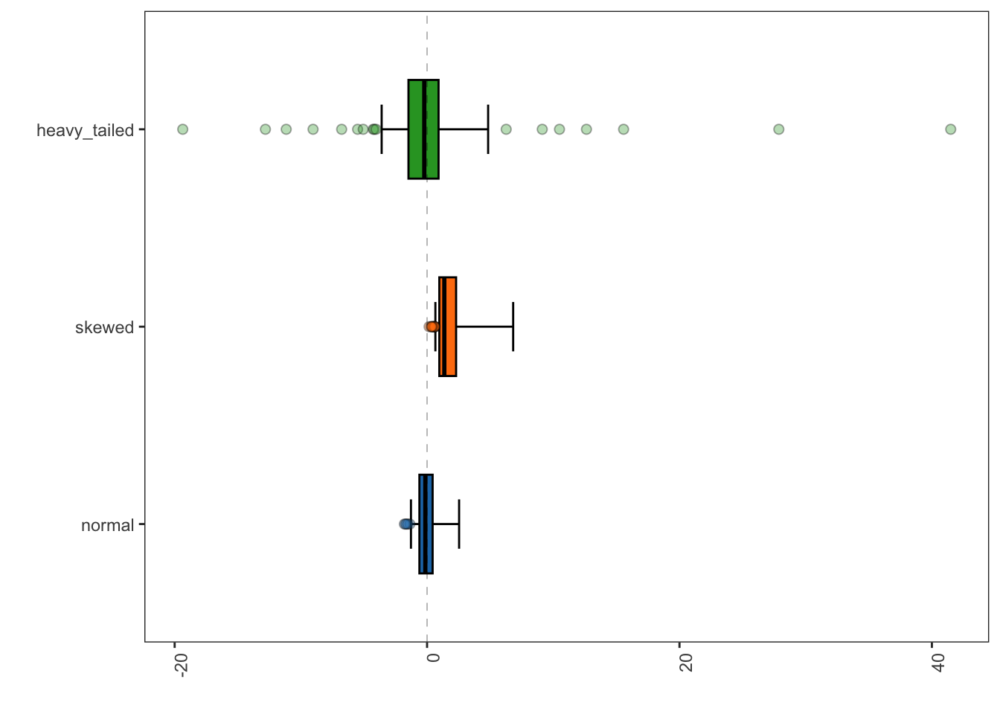

Testing and experimenting.
The specProc package performs a wide range of preprocessing tasks essential for spectroscopic data analysis. Spectral preprocessing is essential in ensuring accurate and reliable results by minimizing the impact of various distortions and artifacts that can arise during data acquisition or due to inherent characteristics of the sample or instrument. Some of the techniques are purely based on mathematical concepts, leveraging robust statistics and signal processing techniques. Additionally, specProc incorporates preprocessing methods inspired by the chemical-physical background of the dataset. These techniques leverage domain knowledge and exploit the fundamental principles governing the spectroscopic phenomenon under investigation.
Installation
You can install the development version from GitHub with:
install.packages("devtools")
devtools::install_github("ChristianGoueguel/specProc")Examples
set.seed(02301)
tbl <- data.frame(
normal = stats::rnorm(100),
skewed = stats::rgamma(100, shape = 2, scale = 1),
heavy_tailed = stats::rcauchy(100, location = 0, scale = 1)
)
descriptive statistics
classical approach
specProc::summaryStats(tbl)
#> # A tibble: 3 × 14
#> variable mean mode median IQR sd variance cv min max range
#> <chr> <dbl> <dbl> <dbl> <dbl> <dbl> <dbl> <dbl> <dbl> <dbl> <dbl>
#> 1 heavy_tail… 0.44 -1.74 -0.22 2.36 6.54 42.7 1486. -19.4 41.5 60.9
#> 2 normal 0 -0.4 -0.14 1.04 0.91 0.823 -Inf -1.80 2.54 4.34
#> 3 skewed 1.83 6.82 1.37 1.32 1.32 1.73 72.1 0.160 6.82 6.66
#> # ℹ 3 more variables: skewness <dbl>, kurtosis <dbl>, count <int>robust approach
specProc::summaryStats(tbl, robust = TRUE)
#> # A tibble: 3 × 14
#> variable median mad Qn Sn medcouple LMC RMC rsd biloc biscale
#> <chr> <dbl> <dbl> <dbl> <dbl> <dbl> <dbl> <dbl> <dbl> <dbl> <dbl>
#> 1 heavy_tail… -0.22 1.74 2.2 2.03 0.1 0.35 0.63 2.58 -0.22 2.4
#> 2 normal -0.14 0.82 0.92 0.93 0.19 0.29 0.55 1.22 -0.05 0.92
#> 3 skewed 1.37 0.95 0.91 0.85 0.46 0.2 0.43 1.41 1.58 1.18
#> # ℹ 3 more variables: bivar <dbl>, rcv <dbl>, count <int>adjusted boxplot
specProc::adjboxplot(tbl) +
ggplot2::geom_hline(yintercept = 0, linetype = "dashed", linewidth = 0.1) +
ggplot2::coord_flip()